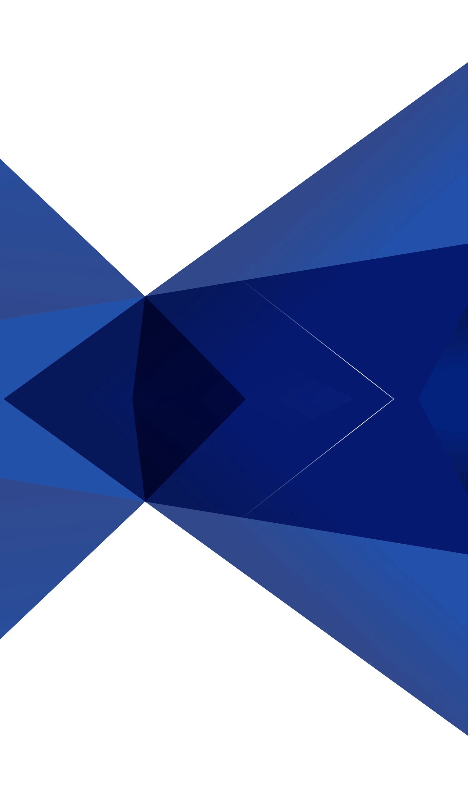
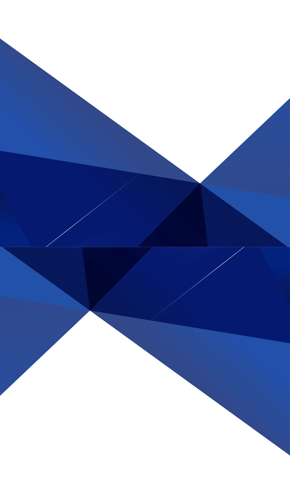

連結背景素材プレビュー
180°回転版を上に、オリジナル版を下に、白の空白なしで連結した縦長素材
① 上下反転(鏡像)で連結
継ぎ目なし・推奨
上=上下反転、下=オリジナル。接合面が完全な鏡像になり、中央の濃紺三角形が連続(菱形/X字)。継ぎ目の線が出ません。

② 180°回転を上に連結
中央に継ぎ目の線
ご指定どおり「180°回転版(上)＋オリジナル(下)」。ただし180°は左右も反転するため接合面の三角形が揃わず、中央に段差・線が出ます。
